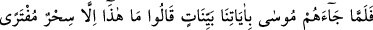
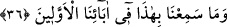
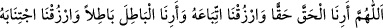

bizim çocuğumuzu gurbette misafir eder. Mûsâ (a.s.)’ı eve aldılar, önüne yemek
koydular. Mûsâ (a.s.) konuşmaya başlayınca, annesi onu tanıdı, yanına aldı; çok ağladı.
Sonra Mûsâ (a.s.) Harun (a.s.)’a şöyle dedi: Allah Teâlâ bana peygamberlik verdi,
ikimize de Firavun’un yanına gitmemizi ve onu Allah (c.c.)’a (îmana) dâvet etmemizi
emretti. Harun (a.s.), Allah Teâlâ’nın emrini duydum ve itâat ettim, dedi. Mûsâ (a.s.)’ın
annesi, “Ben onun sizin ikinizi de öldürmesinden korkarım, çünkü o zalim ve âsîdir”
dedi. Onlar, “Allah Teâlâ bize emretti ve O bizi kendisi korur ve muhâfaza eder.”
dediler. Ertesi gün Mûsâ ve Harun, Firavun’un sarayına gittiler. Bazıları hemen o anda
gittiklerini ve mesajı ilettiklerini, bazıları da bir sene Firavun’un yanına gitmediklerini
söyler. Yâni Firavun onların bir yıl sarayına girmelerine izin vermedi. Bu zaman
zarfında onlara ilâhî lütuflar verilmiş, yâni Allah Teâlâ onları yardımıyla (yardım
ordusuyla) güçlendirmiş ve böylece dâvet kolaylaşmıştır. Kim olursa olsun dâvet hâsıl
olmuştur. Nitekim Allah Teâlâ şöyle buyurmuştur:
36. Mûsâ onlara apaçık âyetlerimizi getirince: Bu, olsa olsa uydurulmuş bir
sihirdir. Biz önceki atalarımızdan böylesini işitmemiştik, dediler.
“Mûsâ onlara” Allah Teâlâ tarafından kendisinin peygamber olarak gönderildiğine
delâlet eden “apaçık âyetlerimizi getirince:” Burada “apaçık âyetler”den maksat, ya
âsâ ve el(in parlaması) gibi o anda Mûsâ (a.s.)’da mevcûd olan mûcizelerdir ya da
sonradan gelecek olan dokuz mûcizedir. Zira onun “gelme zamanı” ifâdesi, bütün risâlet
dönemini içine alır.
Dediler ki: Ey Mûsâ, “Bu,” getirdiklerin “olsa olsa” daha önce bir benzeri
görülmemiş ve “uydurulmuş bir sihir” den başka bir şey değil “dir.”
Bunun sebebi şudur: Nefis, melekût âleminin en aşağı tabakasından yozlaşmış,
gerilemiş olarak (mütenekkis) yaratılmıştır. Kalb, melekût âleminin ortasından Allah’ın
huzuruna müteveccih olarak yaratılmıştır. Dolayısıyla kalb gördüğünü yalanlamamış;
nefis de gördüğünü tasdik etmemiştir. Kalb hastalık ve illetlerden sâlim olunca Hakk’ı
hak, bâtılı bâtıl olarak görürken nefis de hakkı bâtıl, bâtılı da hak olarak görür. Bu
yüzden Peygamberimiz (s.a.)’in duâsından biri şöyledir:
“Ya Rabbi, bize hakkı hak olarak göster ve ona ittibâ ile bizi rızıklandır; bâtılı da
bâtıl olarak göster ve ondan uzaklaşmakla bizleri merzuk kıl.”[105] Nitekim et-
Te’vîlâtü’n-Necmiyye’de bu şekilde kaydedilmiştir.